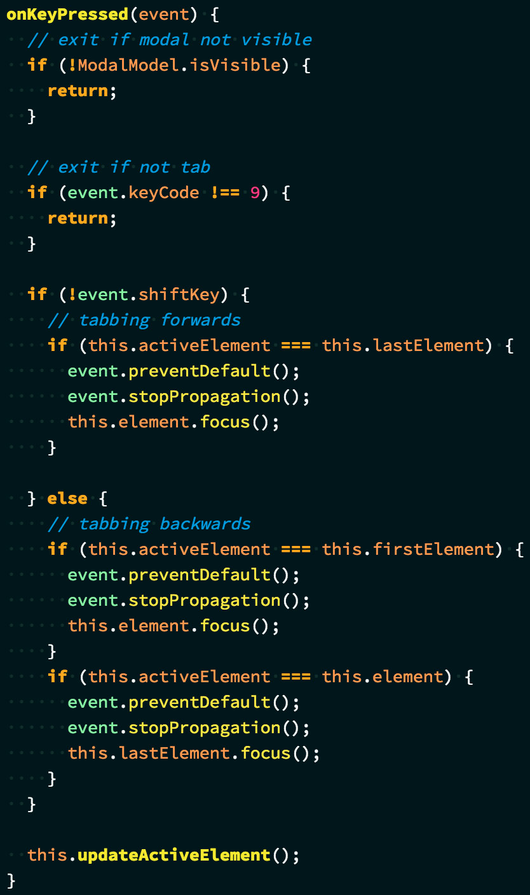

How to build accessible
Simulated Dialogs
a.k.a. Modals
by Mat Janson Blanchet
Foreword
-
Features presented here
based on professional experience
(I am not an accessibility expert yet) -
There are many alternative ways
to implement this functionality
(This is an opiniated presentation, not normative) -
Not an exhaustive presentation
on what is accessibility
(But...)
Accessibility
- Don't just develop for the happy path.
-
Inclusiveness is not a nice-to-have,
it's respecting people. -
Build interactive content for everyone.
- Autistic spectrum
- Deaf or hard of hearing
- Dyslexia or limited litteracy
- Low vision and non-sighted
- Motor disabilities
Screen Reader
An assistive technology that reads
the screen content out loud to the user.
Let's build!
Layout

Features to implement
- Ensure links that spawn dialogs indicate the fact
- Provide a descriptive dialog title
- Ensure dialogs use proper structure
- Ensure that when dialogs are activated
focus moves appropriately - Ensure that keyboard focus remains within modal dialogs
- Ensure that dialogs can be closed via the keyboard
- Ensure keyboard focus returns properly from dialogs
Screen Reader Accessibility:
Ensure links that spawn dialogs indicate the fact
TODO
Augment HTML
with appropriate attributes
for screen readers.
title
The title global attribute contains a text representing advisory information related to the element it belongs to. Such information can typically [...] be presented to the user as a tooltip.
✘
aria-label
The aria-label attribute is used to define a string that labels the current element. Use it in cases where a text label is not visible on the screen.
✔
Add appropriate copy to aria-label
for screen reader to inform the user.

Demo
Code Gotcha:
Don't use <a>
The HTML <a> element is meant to create a hyperlink.
Code like this breaks accessibility
and is semantically incorrect:
Use the <button> element instead.
Screen Reader Accessibility:
Provide a descriptive
dialog title
TODO
Use proper attributes to ensure
modal element is titled and described.
aria-labelledby
The attribute contains
the element ID
in which its label resides.
✔
aria-describedby
The attribute contains
the element ID
in which its description resides.
✔
Demo
Screen Reader Accessibility:
Ensure dialogs
use proper structure
TODO
Structure HTML content
in a proper semantic manner.
Two possible structures
-
Follow layout structure to build HTML,
change tabbing order withtabindexattributes. -
Structure HTML in a semantic manner,
change elements positions with CSS. ✔
role="dialog"
The dialog role is used to mark up a DHTML based application dialog or window that separates content or UI from the rest of the web application or page.
✔
aria-hidden
The attribute indicates
that the element is hidden.
Screenreaders will not see this element
Ensure to change this value
to aria-hidden="false"
when displaying the modal.
Focus Management:
Ensure that when
dialogs are activated
focus moves appropriately
TODO
Use HTMLElement.focus()
to set focus to modal element
when user action requests said modal.
HTMLElement.focus()
The HTMLElement.focus() method sets focus on the specified element, if it can be focused.
✔
id
-
Unique instance of modal
No multiple instances of modal at once -
Use of
document.getElementById()
JavaScript is not the enemy of accessibility
tabindex
-
tabindex="0"✘ -
tabindex="[positiveValue]"✘ -
tabindex="-1"✔
Aside:
Control elements already focusable by default,
oftentimes no need for tabindex.
Demo
Aside:
Don't just use
browser default focus styles
- May not be visible enough in certain contexts
- Do not align with your design/branding
Code Gotcha:
Focus not immediate
document.activeElement
unable to get correct value
immediately after HTMLelement.focus().

Use setTimeout() if needed.
(Does feel like a dirty hack though...)
Focus Management:
Ensure that keyboard focus
remains within
modal dialogs
TODO
Create a focus trap:
Handle tab and shift+tab key presses
so that the focus remains in modal.
DOM references
First & last elements references
Handle key press
Early exits
Handle tabbing forwards
Handle tabbing backwards
Complete handler definition
Demo
Keyboard Accessibility:
Ensure that dialogs
can be closed
via the keyboard
TODO
Handle ESC key press to close modal
the same way the close button would.
Aside:
Model/View/Controller (MVC)
*
- Models hold data and states
- Views are "stupid"
- Controllers are the actors
-
Use models to share
data between components
Exploded View
3 components
- Page
- Modal
- Veil
Veil
Component will hold logic:
- Handle requests for dismissal
- Listen to clicks
- Listen to key presses for the ESC key
Controller handles key press
Veil.onKeyPressed()
Model dispatches change of state
VeilModel.requestDismissal()
Other components
listen to state change
- Veil hides overlay
- Modal hides modal
-
Page sets focus on element
that requested modal
Focus Management:
Ensure keyboard focus
returns properly
from dialogs
TODO
Set focus to element
that requested modal display
once modal is closed.
Assign unique id
to appropriate element
Save reference of clicked element
Set focus back
Final Demo
About Me

Mat Janson Blanchet
Technical architect and developer
with a focus on UI and UX
Available for contractual work
Presentation Material
Slides
Sources
References
-
a { outline: none; }DON'T DO IT! - ally.js – Accessible dialog tutorial
- Avoid Default Browser Focus Styles
- JavaScript is not the enemy of accessibility
- MDN – Using ARIA
- MDN – Using the dialog role
- Udacity – Web Accessibility by Google
- Web Accessibility – Dialogs Best Practices
- W3C – Supported States and Properties